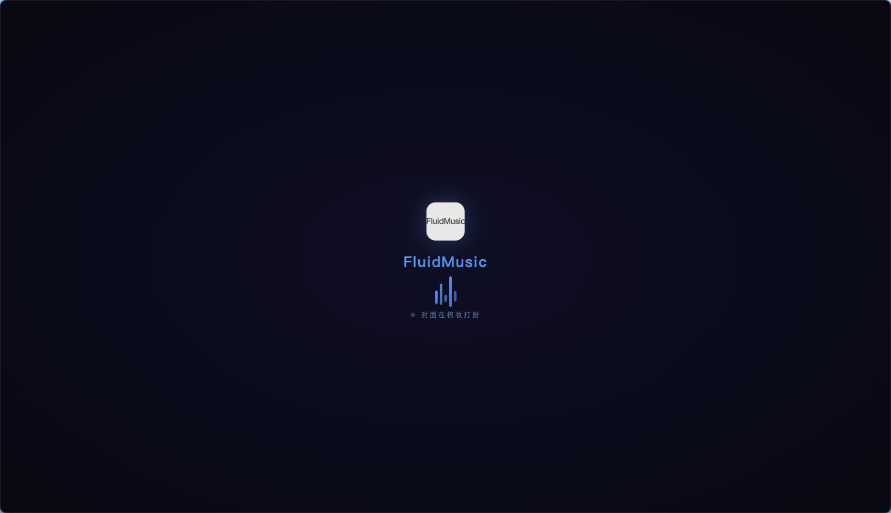

FLUID MUSIC
FluidMusic
流体动态音乐播放器
核心特性
macOS
桌面音乐
融合 Three.js 3D 粒子视觉
与流体物理特效的音乐播放器
双平台歌单
桌面歌词
迷你播放器

3D 粒子封面
动态
粒子云
数千粒子随频谱实时律动
鼠标拖拽自由旋转
Mineradio 风格软光点渲染
软光点
环绕光晕
镜面高光
背景特效
三种
视觉模式
流体水波纹 · 泡沫地形 · 不规则几何
九套配色方案，频谱驱动起伏
DIY 设置
七标签页
控制面板
特效
封面
歌词
歌单
背景
悬浮仓
系统
所有参数实时预览
支持导出导入配置备份
悬浮仓
四分区
毛玻璃
上 · 队列
右 · 歌词
下 · 控制
左 · 歌单
hover 触发显隐 · 支持常驻模式
操作体验
完整
快捷键
空格播放暂停 · 方向键切歌调音量
深度集成 macOS 媒体键
锁屏界面可控
⌨ 全局快捷键
Media Session
技术架构
Electron
+
Three.js
WebGL2 渲染 · 共享上下文
模块化设计 · macOS ARM64 原生
开源项目
克隆
即用
感谢观看 ♪